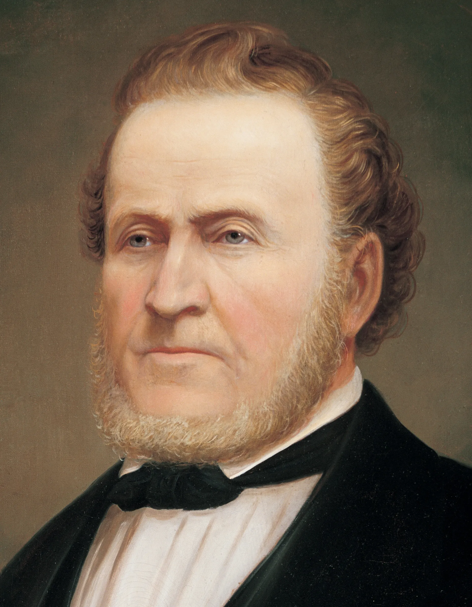

"The greatest fear I have for this people is that they will get rich in this country, forget God, and His people." — Brigham Young, 1861
"In coming days, it will not be possible to survive spiritually without the guiding, directing, comforting, and constant influence of the Holy Ghost." — Russell M. Nelson, 2018
"Because God does work in this world, we can hope; we should hope." "Even when facing the most insurmountable odds." — Jeffrey R. Holland, 2020

"A true disciple is one who follows Christ in both belief and action." "Discipleship requires commitment and obedience." — D. Todd Christofferson, 2014
"The tender mercies of the Lord are real and do not occur randomly." "They help us recognize God's hand in our lives." — David A. Bednar, 2005